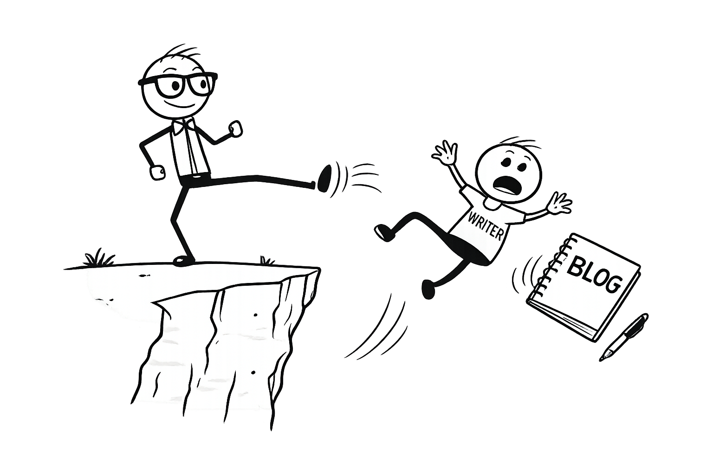

Introduction: Welcome. If you're lost, click the LIKE button.
The Revenge of the Nerds
One day nerds will rule the world, and they will force even the oldest hillbilly from the most primitive Appalachian regions all the way to the wheat-dry, sandy, insular communities of Turkana County, where luddites are not only born but programmed to hate every code of technology. Remember how sick it was to be a blogger, right about when using sick was still sick? Now bloggers are as irrelevant as saying sick.
I don’t know about sick, but I bet your donkey blogging is buried somewhere under the emerging technologies. This is what I call the Revenge of the Nerds. Technology is fast, instant, fun, and gives instant gratification, which means people like me, and maybe five other bloggers left, sing, clap, and dance for ourselves. The question is why? Why do the five of us still hang on to this dying, uneventful, and laborious task? You would think there is probably a lot of money in it. To that I shake my head. Nerds have all that. Got to be famous at least? Nope. Nerds again. Ah, pretty sure you get laid. Nope, it’s the tall, skinny boys with the highest diopters. They do smell like my grandmother and sour milk, but boy, oh boy did they manage to make people hate reading. PS: I hate Nerds.